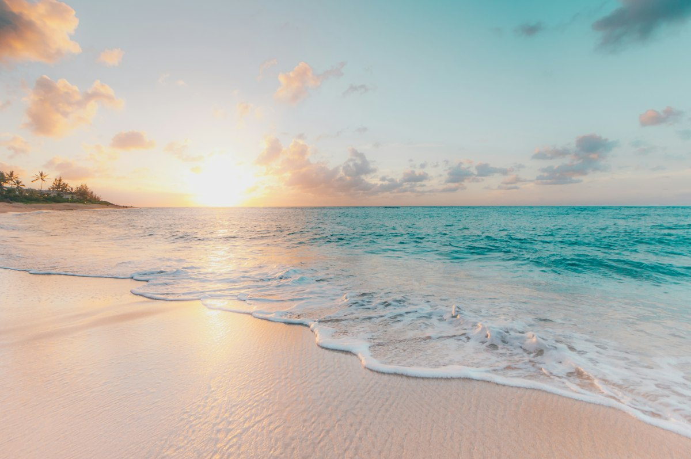
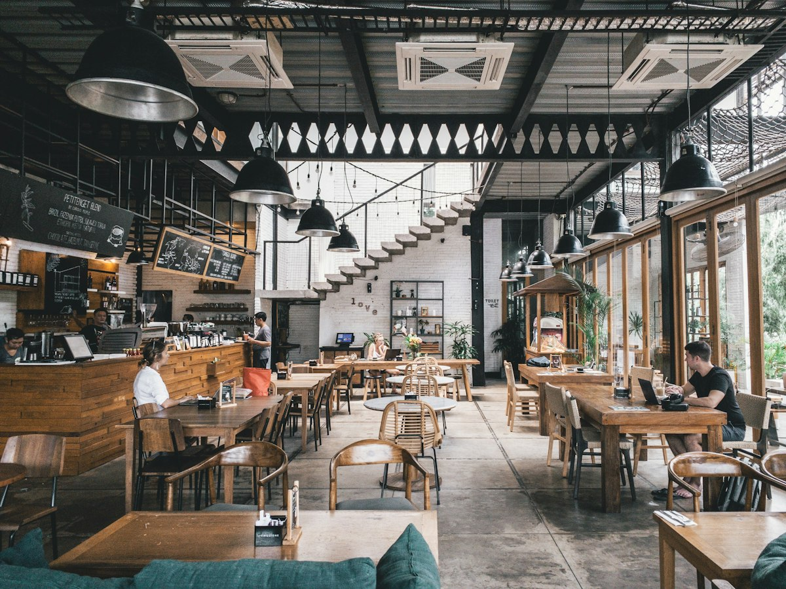
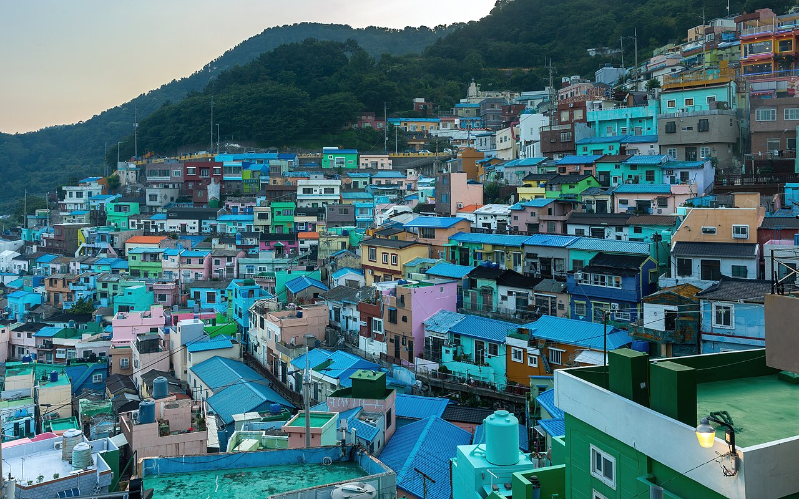
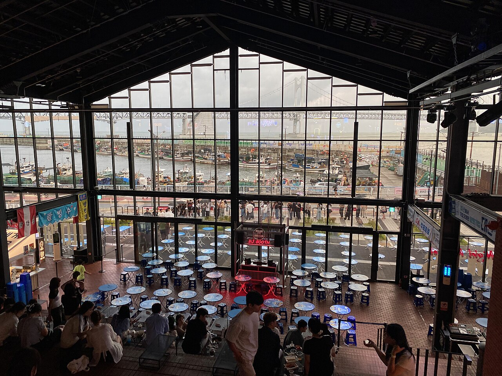

Haeundae Blueline Park & Sky Capsule · 해안 관광열차 / 이색 액티비티
해운대 블루라인파크는 해운대 미포에서 출발하여 달맞이터널, 청사포, 다릿돌전망대, 구덕포를 지나 송정에 이르는 4.8km 구간을 달리는 친환경 관광 철도입니다. 특히 7~10m 높이의 공중 레일을 시속 5km로 천천히 주행하는 4인승 "스카이캡슐"은 발아래로 넘실대는 동해 바다를 프라이빗하게 감상할 수 있어 국내외 여행자들에게 최고의 인기를 누리고 있습니다. 미포 정거장 주변의 세련된 카페와 함께 즐기기 좋습니다.
추천 소요시간
약 1시간 30분~2시간
주소
부산광역시 해운대구 달맞이길62번길 13 (미포정거장)
여행 팁
스카이캡슐은 미포에서 청사포 방향(서→동)을 타면 바다 쪽 레일(외측)을 달려 더 넓은 오션뷰를 감상할 수 있습니다. 사전 온라인 예약은 필수입니다.
빨간 등대가 서 있는 청사포구 풍경
2. 청사포 다릿돌전망대 & 해안가
Cheongsapo Daritdol Skywalk · 해상 스카이워크 / 어촌 힐링
청사포 다릿돌전망대는 청사포에서 송정 방향으로 뻗은 미포 철길 중간에 자리한 해상 전망 시설입니다. "다릿돌"은 청사포 해안에서 해상 암초까지 징검다리처럼 늘어선 암초군을 의미합니다. 끝자락의 반달형 유리바닥 위를 걸으면 마치 바다 위를 걷는 듯한 짜릿한 스릴을 경험할 수 있습니다. 산책 후에는 청사포 명물인 연탄불 조개구이나 오션뷰 감성 카페에서 여유를 만끽할 수 있습니다.
추천 소요시간
약 40분~1시간
주소
부산광역시 해운대구 중동 산3-9
여행 팁
바람이 강한 날에는 입장이 제한될 수 있으니 날씨를 체크하세요. 덧신을 신고 무료 입장하며, 일몰 시간대 석양이 어우러져 장관입니다.

파라솔이 줄지어 선 해운대 백사장
3. 해운대 해수욕장 & 동백섬 누리마루
Haeundae Beach & Dongbaekseom Island · 명품 해변 / 해안 산책로
해운대 해수욕장은 1.5km에 이르는 넓고 고운 모래사장과 맑은 바다가 조화를 이루는 명실상부 대한민국 최고의 해변입니다. 해변 서쪽 끝자락에 연결된 동백섬은 과거 섬이었으나 모래가 퇴적되어 육지와 이어진 육계도로, 동백나무와 해송 숲 사이로 잘 닦인 해안 데크로드가 조성되어 있습니다. 역대 정상들이 모였던 누리마루 APEC하우스와 광안대교, 오륙도가 한눈에 보이는 전망 포인트가 일품입니다.
추천 소요시간
약 1시간 30분
주소
부산광역시 해운대구 우동 동백로 116
여행 팁
동백섬 해안 데크길을 따라 인어상과 등대 전망대를 거쳐 누리마루까지 걷는 코스를 추천합니다. 해운대 시장의 곰장어와 상국이네 떡볶이도 놓치지 마세요.
Huinnyeoul Culture Village & Coastal Tunnel · 바다 절벽 마을 / 영화 촬영지
흰여울문화마을은 한국전쟁 당시 피란민들의 애환이 서린 벼랑 끝 동네에서 출발하여, 지금은 예술가들과 주민들이 함께 가꾼 부산 최고의 감성 명소입니다. 흰 담벼락과 파스텔톤 건물이 푸른 남항 바다와 어우러져 독특한 정취를 뽐내며, 골목마다 감성 소품샵과 오션뷰 테라스 카페가 가득합니다. 마을 아래 절영해안산책로로 내려가면 동굴 밖 바다를 배경으로 인생샷을 건질 수 있는 흰여울해안터널이 있습니다.
추천 소요시간
약 2시간
주소
부산광역시 영도구 절영로 194
여행 팁
흰여울해안터널은 터널 안쪽 어두운 곳에서 바깥 바다를 바라보는 역광 실루엣 샷이 가장 유명합니다. 계단이 많으므로 편한 운동화 착용을 권장합니다.

싱싱한 생선이 가득한 자갈치시장 좌판
2. 자갈치시장 & BIFF 광장 미식골목
Jagalchi Fish Market & BIFF Square · 전통 어시장 / 로컬 스트리트푸드
자갈치시장은 부산을 상징하는 대한민국 최대의 어시장으로, 자갈치 아지매들의 정겨운 사투리와 싱싱한 해산물이 가득한 삶의 현장입니다. 수산물센터 1층에서 직접 고른 활어를 2층 초장집에서 맛보거나, 시장 골목의 고등어구이·꼼장어 구이를 즐길 수 있습니다. 지하도를 건너면 만나는 BIFF(부산국제영화제) 광장은 핸드프린팅 거리와 함께 견과류가 듬뿍 들어간 원조 씨앗호떡, 비빔당면, 유부전골 등 부산 대표 길거리 음식을 맛볼 수 있는 미식 천국입니다.
추천 소요시간
약 1시간 30분~2시간
주소
부산광역시 중구 자갈치해안로 52
여행 팁
자갈치시장 현대화 건물 옥상 "자갈치 하늘공원(전망대)"에 오르면 남항 바다와 영도대교, 부산타워를 360도로 무료 조망할 수 있습니다.

산비탈을 따라 늘어선 파스텔톤 계단식 주택 전경
3. 감천문화마을 & 어린왕자 포토존
Gamcheon Culture Village · 계단식 예술마을 / 포토존
감천문화마을은 1950년대 피란민들이 산비탈을 일구어 만든 계단식 마을입니다. 뒷집의 조망권을 가리지 않도록 질서 있게 지어진 독특한 계단식 주택 구조를 바탕으로, 예술가들과 주민들이 합심하여 골목 곳곳에 다채로운 벽화와 조형 예술 작품을 설치하며 세계적인 관광 명소로 탈바꿈했습니다. 특히 난간에 걸터앉아 마을을 바라보는 어린왕자와 사막여우 조각상은 전 세계 여행자들의 줄이 끊이지 않는 필수 인증샷 명소입니다.
추천 소요시간
약 1시간 30분
주소
부산광역시 사하구 감내2로 203
여행 팁
마을 안내센터에서 스탬프 투어 지도를 구입하면 골목 구석구석 숨겨진 갤러리와 옥상 전망대를 효율적으로 탐방할 수 있습니다.
🌉 코스 C: 트렌디 오션라이프 & 광안대교 다이아몬드 야경 코스
⏱️ 약 5~6시간📍 약 5.2 km
젊음의 바다 광안리, 트렌디 복합공간 밀락더마켓과 환상적인 드론쇼
추천 동선: 광안리 해수욕장 & 테라스 카페거리 → 밀락더마켓 (Millac the Market) → 광안대교 다이아몬드 야경 & M 드론라이트쇼
다이아몬드 브릿지를 배경으로 즐기는 핫플레이스와 밤바다의 열기
바다 한가운데 놓인 광안대교 정면 풍경
1. 광안리 해수욕장 & 테라스 카페거리
Gwangalli Beach & Ocean Terrace Cafe Street · 젊음의 해변 / 오션뷰 카페
광안리 해수욕장은 도심과 바다가 가장 조화롭게 맞닿아 있는 부산 대표 해변 중 하나입니다. 바다 한가운데를 가로지르는 광안대교의 전경이 가장 아름답게 정면으로 조망되며, 수질이 깨끗하고 백사장이 넓어 사계절 내내 활기가 넘칩니다. 해변가를 따라 통유리창 너머로 바다를 감상할 수 있는 감성 카페와 브런치 식당, 크래프트 맥주 펍들이 밀집해 있어 여유로운 오션라이프를 즐기기에 최적입니다.
추천 소요시간
약 1시간 30분
주소
부산광역시 수영구 광안해변로 219
여행 팁
해변에 비치된 광안리 시그니처 조형물 앞과 백사장 모래사장에서 광안대교를 손바닥 위에 올려놓는 원근법 사진을 남겨보세요.

통유리창 너머로 바다가 보이는 밀락더마켓 내부
2. 밀락더마켓 (Millac the Market)
Millac The Market Complex Cultural Space · 트렌디 복합문화공간 / 오션스탠드
밀락더마켓은 옛 민락수변공원 인근에 붉은 벽돌 창고형 건축물로 조성된 부산 최고의 복합문화공간입니다. 지하 1층부터 지상 2층까지 약 7,700㎡ 규모로, 중앙의 거대한 "오션뷰 스탠드" 계단 좌석에 앉아 대형 통창 너머로 광안대교와 민락항 바다를 감상할 수 있습니다. 수제맥주, 도넛, 랍스터 샌드위치 등 다채로운 미식 F&B와 개성 넘치는 편집숍, 주기적인 버스킹 공연과 아트 전시가 열립니다.
추천 소요시간
약 1시간~1시간 30분
주소
부산광역시 수영구 민락수변로17번길 56
여행 팁
식음료 매장에서 음식을 테이크아웃해 오션뷰 스탠드 좌석에 자리를 잡으면 근사한 실내 오션뷰 피크닉을 즐길 수 있습니다.
광안대교는 총연장 7,420m의 바다 위 복층 교량으로, 밤이 되면 첨단 LED 조명 시스템이 10만 가지 이상의 색상을 연출하여 "다이아몬드 브릿지"라는 별칭으로 불립니다. 특히 광안리 해변에서 정면으로 바라보는 야경은 부산 여행의 정점으로 꼽힙니다. 매주 토요일 저녁에는 백사장에서 수백 대의 최첨단 드론이 음악에 맞춰 밤하늘에 입체적인 그림과 메시지를 그리는 "광안리 M 드론라이트쇼"가 열려 전 세계 관광객들의 감탄을 자아냅니다.
추천 소요시간
약 1시간 30분~2시간
주소
부산광역시 수영구 광안해변로 219 (광안리 해변 일원)
여행 팁
매주 토요일 저녁(동절기 19시/21시, 하절기 20시/22시) 드론쇼가 열립니다. 시작 30분 전에 백사장 중앙에 돗자리를 펴고 관람하면 가장 좋습니다.
운영 시간, 요금, 출입 통제 여부는 계절과 현지 사정에 따라 바뀔 수 있습니다. 방문 전에 각 장소의 공식 안내를 꼭 확인해 주세요.